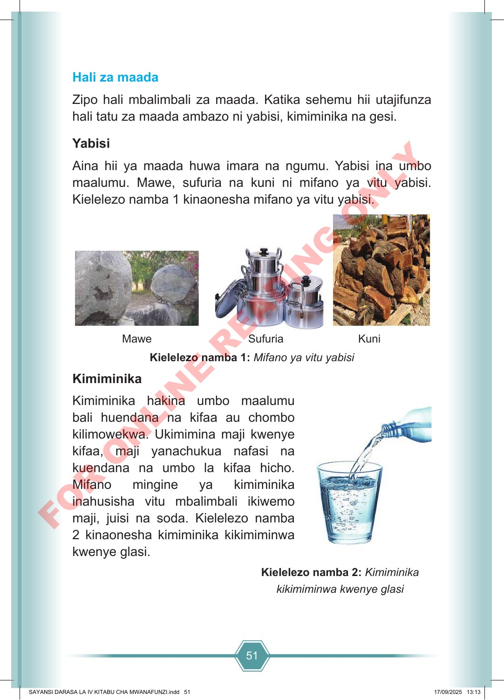

51 Hali za maada Zipo hali mbalimbali za maada. Katika sehemu hii utajifunza hali tatu za maada ambazo ni yabisi, kimiminika na gesi. Yabisi Aina hii ya maada huwa imara na ngumu. Yabisi ina umbo maalumu. Mawe, sufuria na kuni ni mifano ya vitu yabisi. Kielelezo namba 1 kinaonesha mifano ya vitu yabisi. Mawe Sufuria Kuni Kielelezo namba 1: Mifano ya vitu yabisi Kimiminika Kimiminika hakina umbo maalumu bali huendana na kifaa au chombo kilimowekwa. Ukimimina maji kwenye kifaa, maji yanachukua nafasi na kuendana na umbo la kifaa hicho. Mifano mingine ya kimiminika inahusisha vitu mbalimbali ikiwemo maji, juisi na soda. Kielelezo namba 2 kinaonesha kimiminika kikimiminwa kwenye glasi. Kielelezo namba 2: Kimiminika kikimiminwa kwenye glasi SAYANSI DARASA LA IV KITABU CHA MWANAFUNZI.indd 51 SAYANSI DARASA LA IV KITABU CHA MWANAFUNZI.indd 51 17/09/2025 13:13 17/09/2025 13:13 F O R O N L I N E R E A D I N G O N L Y